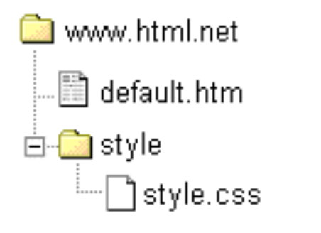
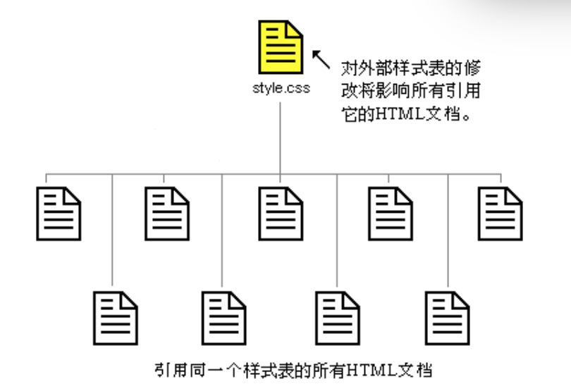

方法3：外部样式表（引用一个样式表文件）
更推荐采用这种引用外部样式表的方法。在本讲义之后的例子中，将全部采用该方法。
外部样式表就是一个扩展名为css的文本文件。跟其他文件一样，你可以把样式表文件放在Web服务器上或者本地硬盘上。
例如，比方说你的样式表文件名为style.css，它通常被存放于名为style的目录中。就像下面这样：

问题：如何在一个HTML文档里引用一个外部样式表文件（style.css）呢？
- 答案：在HTML文档里创建一个指向外部样式表文件的链接（
link）即可，就像下面这样：
<link rel="stylesheet" type="text/css" href="style/style.css" />
注意：要在href属性里给出样式表文件的地址
- 这行代码必须被插入HTML代码的头部（header），即放在标签
<head>和标签</head>之间。就像这样：
<html>
<head>
<meta charset="utf-8">
<title>我的文档</title>
<link rel="stylesheet" type="text/css" href="style/style.css" />
</head>
<body>
....
这个链接告诉浏览器：在显示该HTML文件时，应使用给出的CSS文件进行布局。
这种方法的优越之处在于：多个HTML文档可以同时引用一个样式表。换句话说，可以用一个CSS文件来控制多个HTML文档的布局。

这一方法可以令你省去许多工作。例如，假设你要修改某网站的所有网页（比方说有100个网页）的背景颜色，采用外部样式表可以避免你手工一个一个修改这100个HTML文档的工作。
采用外部样式表，这样的修改只需几秒钟即可搞定——只要修改外部样式表.css文件里的代码即可。